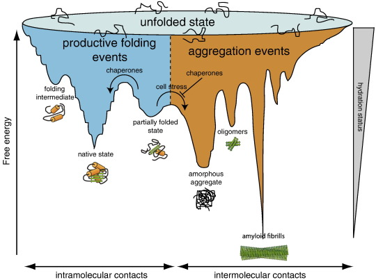

Complejidad algorítmica del plegamiento
Sabemos que bajo condiciones fisiológicas el proceso de plegamiento es termodinámicamente
favorable, es decir, que las macromoléculas son más estables en su conformación nativa que en
otras posibles conformaciones. Y conocemos al menos los factores más importantes que afectan
y guían al proceso de plegamiento. Por último, sabemos que el plegamiento es un proceso rápido,
que tarda a lo sumo tiempos del orden de segundos. A pesar de esto, a día de hoy no sabemos
predecir de forma precisa cómo se plegará una proteína o un ácido nucleico partiendo solamente
de su secuencia.
Cuáles son las dificultades? Esto lo veremos tomando como ejemplo las proteínas, que se han estudiado
mucho más a este nivel. Son fundamentalmente dos:
- el enorme número de posibles conformaciones que puede tomar una cadena polipeptídica
- la necesidad de cuantificar la estabilidad en condiciones fisiológicas de cada una de ellas
El proceso de plegamiento puede entonces verse como una exploración en un embudo ( funnel ) como el de la figura
2.2, donde observamos un máximo de estabilidad que se corresponde con un mínimo de energía libre
(conformaciones nativas), y otros máximos secundarios o locales denominados estados metaestables. En ciertas condiciones
las proteínas pueden quedarse atrapadas en estos estados y perder funcionalidad o agregarse,
de ahí la importancia de las chaperonas (Pascual García, 2014).
Figura 2.2:
Superficie energética del plegamiento de proteínas desde su síntesis hasta su estado final plegado o agregado.
Algunas conformaciones metaestables deben superar barreras energéticas para retomar su ruta de plegamiento favorable,
en ocasiones con ayuda de chaperonas (izquierda). Cuando varias moléculas se pliegan en el mismo compartimento pueden formar contactos
que propicien la acumulación de agregados amorfos, oligómeros tóxicos o fibrillas amiloides (derecha).
Figura tomada de Amm et al. (2014) y reproducida con permiso de los autores.
|

|
Figura 2.3:
Contribuciones de cada uno de los residuos de una proteína camaleónica, que puede adoptar
un plegamiento  (izquierda) u otro
(izquierda) u otro
 (derecha) con muy pocos cambios en la secuencia.
Arriba: los residuos que favorecen el plegamiento se empaqueten en la estructura globular correspondiente.
Medio: las medidas de energía libre por residuo revelan las partes de la secuencia que favorecen el plegamiento.
Abajo: la energía libre por residuo puede generalmente atribuirse a la secuencia (GA30 o GB30) que favorece cada plegamiento.
Figura tomada de Roy et al. (2014) y reproducida con permiso de los autores.
(derecha) con muy pocos cambios en la secuencia.
Arriba: los residuos que favorecen el plegamiento se empaqueten en la estructura globular correspondiente.
Medio: las medidas de energía libre por residuo revelan las partes de la secuencia que favorecen el plegamiento.
Abajo: la energía libre por residuo puede generalmente atribuirse a la secuencia (GA30 o GB30) que favorece cada plegamiento.
Figura tomada de Roy et al. (2014) y reproducida con permiso de los autores.
|
|
Figura 2.4:
Embudo de plegamiento de una ribozima.
Figura de Behrouzi et al. (2012) y reproducida con permiso de los autores.
|
|
Desde este punto de vista, la búsqueda de la conformación nativa es como buscar una aguja en un pajar.
Cómo es el espacio de conformaciones? Lo veremos por medio de la paradoja de Levinthal.
PDF
Contreras-Moreira,B. (2018) Algoritmos en bioinformática estructural. doi:10.20350/digitalcsic/8544
http://www.eead.csic.es/compbio